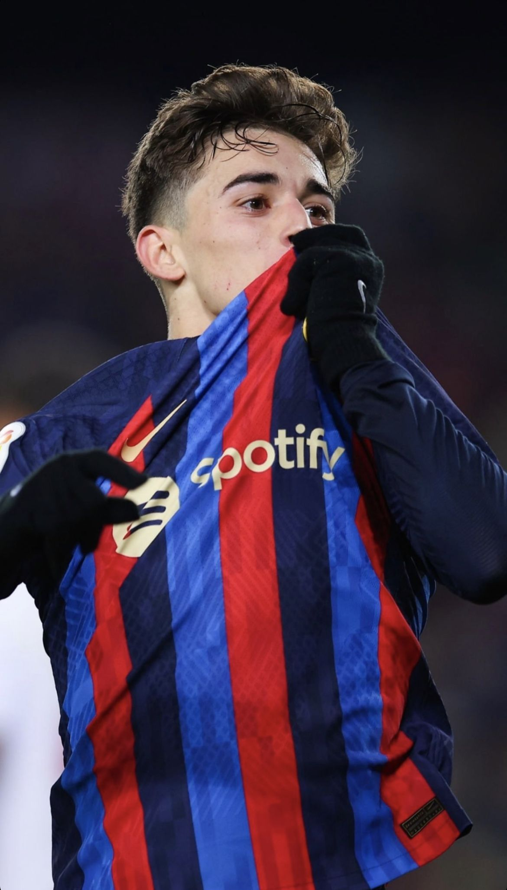
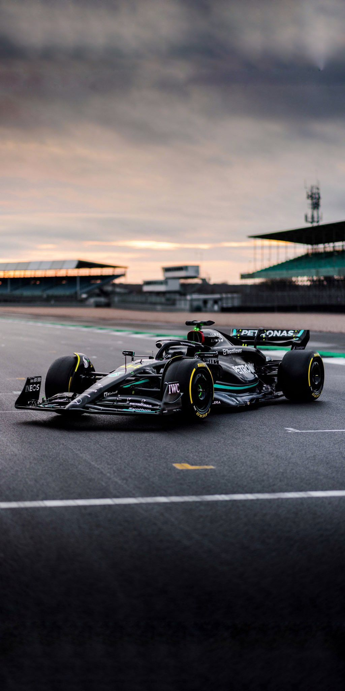

ესპანური საფეხბურთო კლუბი, რომელიც კატალონიის ავტონომიურ ოლქში ბარსელონაში მდებარეობს. კლუბი 1899 წელს შვეიცარიელმა ჟოან გამპერმა, სხვა რამდენიმე შვეიცარიელის, ინგლისელისა და კატალონიელის დახმარებით დააარსა. კლუბი კატალონიის ერთ-ერთი სიმბოლო გახდა, სწორედ აქედან მომდინარეობს მისი დევიზი „Més que un club“ „უფრო მეტი, ვიდრე კლუბი

ფორმულა ერთი (ინგლ. Formula One, არაოფიც. სამეფო ფორმულა, ასევე ცნობილია, როგორც ფორმულა-1 ან F1) — მსოფლიო ჩემპიონატი წრიულ ავტორბოლაში. ავტორბოლის ყველაზე ძვირი და მაღალტექნოლოგიური სახეობა, რომელსაც ავტომობილების საერთაშორისო ფედერაცია (ფია) ატარებს. სახელი ფორმულა გულისხმობს წესების ერთობლიობას, რომლებიც მონაწილე გუნდებმა ბოლიდის პროექტირებისას უნდა დაიცვან